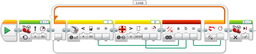

					<table cellpadding="0" cellspacing="0" border="0"><tbody><tr><td>
	
						<h1>颜色传感器模块<a name="top"></a></h1>
		<div id="block_79" class="block blockHeader">
				<table cellspacing="0" cellpadding="0" border="0">
			<tbody><tr>
				<td valign="top" class="image"></td>
				<td valign="top" class="description"><div class="text-wrapper">颜色传感器模块从颜色传感器获取数据。可以测量光线的颜色或强度并获取数字输出。还可以将传感器数据与输入值进行比较并获取逻辑（“真”或“伪”）输出。<br>
<br>
有关颜色传感器工作原理、不同模式、提供的数据以及编程示例的更多信息，请参见<a href="./index.html?id=UsingSensors_Color">使用颜色传感器</a>。</div></td>
			</tr>
		</tbody></table>
			</div>
	<div id="block_80" class="block blockTip">
		<div class="title">提示和技巧</div>
		<div class="boxContent">
			<div class="description">颜色传感器模块使用<a href="./index.html?id=DataWires">数据线</a>输出数据。有关无需数据线的其他使用颜色传感器的方式，请参见<a href="./index.html?id=UsingSensors_Color">使用颜色传感器</a>。</div>
				</div>
	</div>
	<div id="block_82" class="block blockChaptor">
		<div class="title"><a name="ChooseTheSensorPortAndMode" style="position:relative; top:-10px;"></a>选择传感器端口和模式</div>
		<div class="description"><br>
<br>
<br>
 端口选择器 <br>
 模式选择器<br>
 输入<br>
 输出<br>
<br>
使用模块顶部的<a href="./index.html?id=PortSelector">端口选择器</a>可确保传感器端口号（1、2、3 或 4）与颜色传感器连接的 EV3 程序块上的端口匹配。<br>
<br>
使用模式选择器可为模块选择模式。可用<a href="./index.html?id=ColorSensor#InputsAndOutputs">输入和输出</a>会因模式而异。</div>
	</div>
	<div id="block_83" class="block blockChaptor">
		<div class="title">模式</div>
		<div class="description"></div>
	</div>
	<div id="block_84" class="block blockMode">
		<div class="title"><a name="Mode_MeasureColor" style="position:relative; top:-10px;"></a>测量 － 颜色</div>
		<div class="description"><br>
<br>
“测量 － 颜色”模式在<a href="./index.html?id=ColorSensor#Color">颜色</a>中输出检测到的颜色编号。</div>
	</div>
	<div id="block_86" class="block blockMode">
		<div class="title"><a name="Mode_MeasureReflectedLight" style="position:relative; top:-10px;"></a>测量 － 反射光线强度</div>
		<div class="description"><br>
<br>
“测量 － 反射光线强度”模式在<a href="./index.html?id=ColorSensor#Value">测量值</a>中输出光线强度。</div>
			<div class="links">请参见<a href="./index.html?id=UsingSensors_Color">使用颜色传感器</a>中的编程示例 5。</div>
	</div>
	<div id="block_87" class="block blockMode">
		<div class="title"><a name="Mode_MeasureAmbientLight" style="position:relative; top:-10px;"></a>测量 － 环境光强度</div>
		<div class="description"><br>
<br>
“测量 － 环境光强度”模式在<a href="./index.html?id=ColorSensor#Value">测量值</a>中输出光线强度。</div>
	</div>
	<div id="block_88" class="block blockMode">
		<div class="title"><a name="Mode_CompareColor" style="position:relative; top:-10px;"></a>比较 － 颜色</div>
		<div class="description"><br>
<br>
在“比较 － 颜色”模式中，可以在<a href="./index.html?id=ColorSensor#Setofcolors">颜色集合</a>中选择一个或多个颜色。如果检测到的颜色与任何所选颜色匹配，则<a href="./index.html?id=ColorSensor#Result">比较结果</a>输出会是“真”。检测的颜色会输出到<a href="./index.html?id=ColorSensor#Value">测量值</a>。</div>
	</div>
	<div id="block_89" class="block blockMode">
		<div class="title"><a name="Mode_CompareReflectedLight" style="position:relative; top:-10px;"></a>比较 － 光线强度  <a name="Mode_CompareAmbientLight" style="position:relative; top:-10px;"></a></div>
		<div class="description"><br>
<br>
“比较 － 反射光线强度”和“比较 － 环境光强度”模式使用所选<a href="./index.html?id=ColorSensor#Comparison">比较类型</a>，将检测到的光线强度与<a href="./index.html?id=ColorSensor#Threshold">阈值</a>进行比较。“真/伪”结果在<a href="./index.html?id=ColorSensor#Result">比较结果</a>中输出，检测到的光线强度在<a href="./index.html?id=ColorSensor#Value">测量值</a>中输出。</div>
	</div>
	<div id="block_91" class="block blockExample">
		<div class="title">示例 1</div>
		<div class="image"></div>
		<div class="description">此程序将程序块状态灯以橙色打开，如果颜色传感器检测到大于 50 的环境光强度，便使其闪烁。</div>
	</div>
	<div id="block_92" class="block blockExample">
		<div class="title">示例 2</div>
		<div class="image"></div>
		<div class="description">此程序使机器人驱动，直至颜色传感器检测到小于 50 的反射光线强度，或直至电机 B 转动了 2000 度（先发生的情况起作用）。</div>
	</div>
	<div id="block_1412" class="block blockChaptor">
		<div class="title"><a name="CalibrateModes" style="position:relative; top:-10px;"></a>校准模式</div>
		<div class="description">校准模式使您可以在程序中校准颜色传感器。也可以手动键入传感器应使用的最小和最大值。</div>
	</div>
	<div id="block_476" class="block blockMode">
		<div class="title"><a name="Mode_CalibrateMinColor" style="position:relative; top:-10px;"></a>校准 － 最小值</div>
		<div class="description"><br>
<br>
“校准 － 最小值”模式使您可以在<a href="./index.html?id=ColorSensor#CalibrateValue">值</a>输入中指定最小光线强度。校准之后，颜色传感器会将此光线强度报告为 0 或指定值。</div>
	</div>
	<div id="block_1410" class="block blockMode">
		<div class="title"><a name="Mode_CalibrateMaxColor" style="position:relative; top:-10px;"></a>校准 － 最大值</div>
		<div class="description"><br>
<br>
“校准 － 最大值”模式使您可以在<a href="./index.html?id=ColorSensor#CalibrateValue">值</a>输入中指定最大光线强度。校准之后，颜色传感器会将此光线强度报告为 100 或指定值。</div>
	</div>
	<div id="block_1411" class="block blockMode">
		<div class="title"><a name="Mode_CalibrateResetColor" style="position:relative; top:-10px;"></a>校准 － 重置</div>
		<div class="description"><br>
<br>
“校准 － 重置”模式将颜色传感器校准还原为其默认状态。</div>
	</div>
	<div id="block_93" class="block blockChaptor">
		<div class="title"><a name="InputsAndOutputs" style="position:relative; top:-10px;"></a>输入与输出 <a name="Parameters" style="position:relative; top:-10px;"></a></div>
		<div class="description">可用于颜色传感器模块的输入取决于所选模式。可以将输入值直接输入到模块中。或者，可以通过<a href="./index.html?id=DataWires">数据线</a>从其他编程模块的输出提供输入值。</div>
	</div>
	<div id="block_96" class="block blockTable ">
		<table class="blockTable">
		

			<tbody><tr>
<th>输入</th><th>类型</th><th>允许的值</th><th>备注</th>			</tr>
<tr><td>颜色集合 <a name="Setofcolors" style="position:relative; top:-10px;"></a></td><td>数字排列</td><td>每个元素：0 － 7</td><td>要在“比较 － 颜色”模式中进行测试的所选颜色：<br>
0 = 无颜色 <br>
1 = 黑色 <br>
2 = 蓝色 <br>
3 = 绿色 <br>
4 = 黄色 <br>
5 = 红色 <br>
6 = 白色 <br>
7 = 棕色</td></tr><tr><td>比较类型 <a name="Comparison" style="position:relative; top:-10px;"></a></td><td>数字</td><td>0 － 5</td><td>0：=（等于）<br>
1：≠（不等于）<br>
2：&gt;（大于）<br>
3：≥（大于或等于）<br>
4：&lt;（小于）<br>
5：≤（小于或等于）</td></tr><tr><td>阈值 <a name="Threshold" style="position:relative; top:-10px;"></a></td><td>数字</td><td>任何数字</td><td>要将传感器数据与之进行比较的值</td></tr><tr><td>值 <a name="CalibrateValue" style="position:relative; top:-10px;"></a>  <a name="CalibrateValueMin" style="position:relative; top:-10px;"></a>  <a name="CalibrateValueMax" style="position:relative; top:-10px;"></a></td><td>数字</td><td>0 － 100</td><td>校准模式的光线强度</td></tr>		</tbody></table>
	</div>
	<div id="block_99" class="block blockStep">
		<div class="title"></div>
		<div class="description">可用输出取决于所选模式。要使用某个输出，请使用<a href="./index.html?id=DataWires">数据线</a>将该输出连接到另一个编程模块。</div>
	</div>
	<div id="block_98" class="block blockTable ">
		<table class="blockTable">
		

			<tbody><tr>
<th>输出</th><th>类型</th><th>备注</th>			</tr>
<tr><td>颜色 <a name="Color" style="position:relative; top:-10px;"></a></td><td>数字</td><td>检测到的颜色编号： <br>
0 = 无颜色 <br>
1 = 黑色 <br>
2 = 蓝色 <br>
3 = 绿色 <br>
4 = 黄色 <br>
5 = 红色 <br>
6 = 白色 <br>
7 = 棕色</td></tr><tr><td>比较结果 <a name="Result" style="position:relative; top:-10px;"></a></td><td>逻辑</td><td>比较模式的“真/伪”结果。</td></tr><tr><td>测量值 <a name="Value" style="position:relative; top:-10px;"></a></td><td>数字</td><td>用于比较模式的传感器数据值。</td></tr>		</tbody></table>
	</div>
	
			<div id="quick">
				<div class="header"><a href="./index.html?id=ColorSensor#header">颜色</a></div>
					<div class="quickText">快速链接</div>
					
					<ul>
	<li><a href="./index.html?id=ColorSensor#ChooseTheSensorPortAndMode">选择传感器端口和模式</a></li><li><a href="./index.html?id=ColorSensor#CalibrateModes">校准模式</a></li><li><a href="./index.html?id=ColorSensor#InputsAndOutputs">输入与输出</a></li>					</ul>
			</div>
	
	</td></tr></tbody></table>